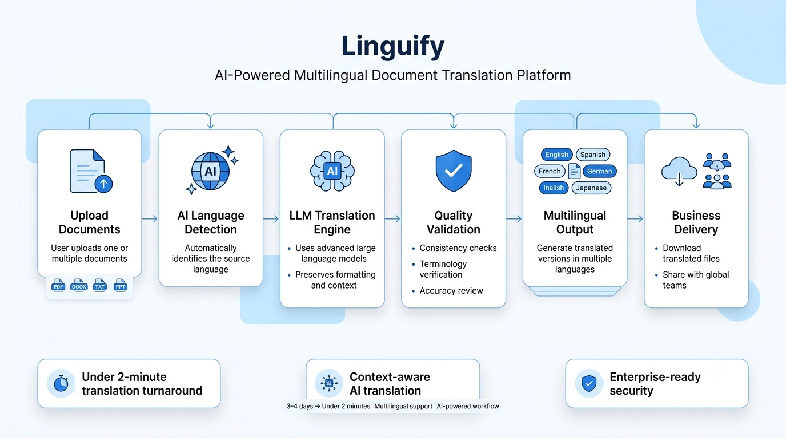
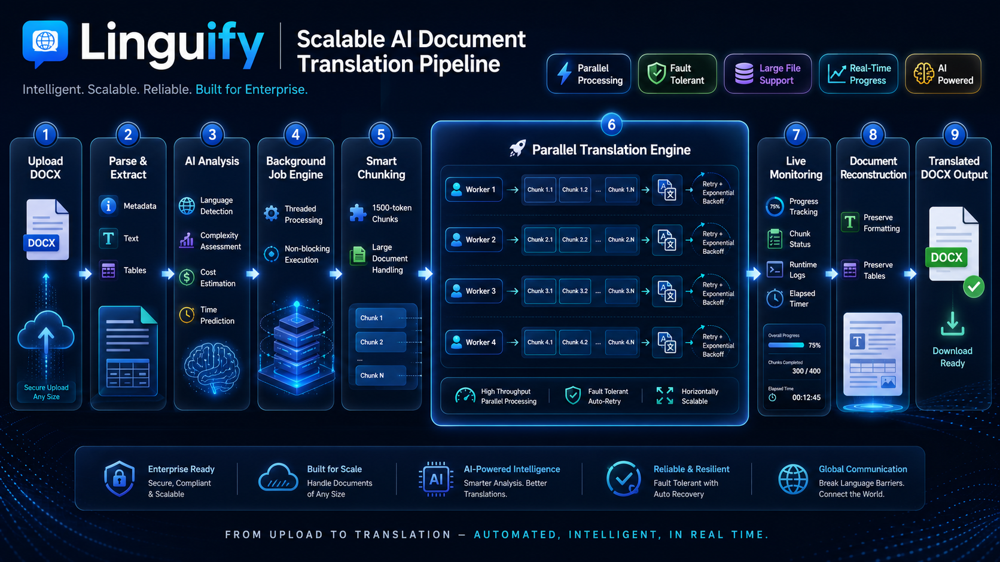

AI-powered multilingual document translation platform
Organizations operating across multiple languages often rely on manual translation workflows that slow collaboration, delay decision-making, and increase operational costs. Linguify streamlines this process by automating document translation while preserving context, formatting, and accuracy.
Reduced document translation turnaround from 3–4 days to under 2 minutes through an AI-powered multilingual workflow, enabling faster communication across global teams.

Linguify automatically detects document language, translates content using advanced language models, validates output quality, and delivers polished, multilingual documents ready for business use.
Maintains document meaning, tone, and formatting while generating accurate translations across multiple languages.
Automates complex translation workflows to reduce turnaround from days to minutes without sacrificing quality.
Designed for secure, scalable document translation suitable for organizations operating across international teams.

The platform combines document processing, language detection, large language models, validation, and cloud infrastructure into a scalable pipeline capable of handling multilingual enterprise workflows.
Claude • GPT APIs • Python • Document Processing • AWS
The live application relies on commercial LLM APIs and cloud resources. Demonstrations are provided in a controlled environment to manage operational costs while showcasing the complete workflow.